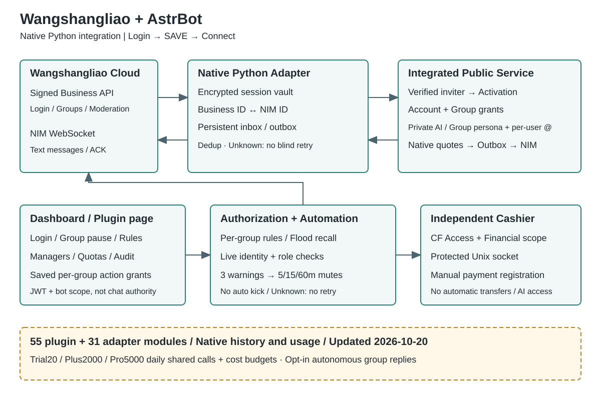

The current blacklist contract now requires direct
muting on every trusted actual rejoin, retaining the member without kicking.
Code loaded after the20:02:56 Beijing-time full restart on October23,2026;
online configuration verification passed, but no new actual rejoin/mute acceptance
was performed. The 16:53:53 Beijing-time loading and subsequent
three-kick test belong to the earlier policy, not acceptance of this rule.
Blacklists bind one robot/group. Group callers
need verified native owner/admin and group authority, using a native reply/actual
mention of one target; adding an entry never immediately punishes, by mute or kick. Privately select a
group, search by name, send 选择黑名单 INDEX, preview and personally send
确认黑名单 TOKEN. Dashboard Group Management → Rules → Blacklist Settings
(群管理 → 规则 → 黑名单设置) uses read/search, preview and personal commit;
ordinary managers gain no dashboard login. Duration defaults to 29 days/41,760 minutes.
Use 黑名单禁言时长 N分钟 / 黑名单禁言时长 N小时 / 黑名单禁言时长 N天;
converted values must be 1..41760 whole minutes, isolated by robot/group.
Select the group first in DMs, check the preview, then personally send a new
确认黑名单 token. Changes affect only new actual rejoins after confirmation,
never reset existing mutes or apply retrospective sanctions. Ordinary messages,
duplicate notices/additions and restarts never renew mutes.
Old → new: three successful kicks then fixed 29-day mutes → direct configurable
mutes from the first actual rejoin. Historical counts no longer select phases;
Blacklist → Blacklist Settings in the dashboard. Historical receipts remain intact.
Owners/admins/bots
remain protected except an exactly authorized isolated fixture. Whitelists never
override blacklists. Ordinary automatic kicking stays prohibited; ordinary mutes
retain the 24-hour cap. Removal does not unmute; unmute does not remove entries. Unknown
receipts pause without retries. Images stay private and deduplicate within one robot/group;
keywords use one image before text, schedules up to three rotating images per plan.
Three independent plans default to minute 00/20/40, each every 60 minutes, requiring
preview, save and enablement. No keyword-image DM inbox is added; existing 广告图片
intake is scheduled-only. AI never executes or confirms. See the contract for missing
permission, wrong-group and upload-failure steps. The user's “看得见” confirms
the corresponding phone display only, not future actual expiry. Offline regression
and online duration41,760→60→41,760 passed, not new actual rejoin sanctions.
The20:24:00 protection review matched other protected surfaces and retained
audited test217→220 and concurrent Dingfeng dashboard versions4/5. Raw tenants
hashes differ; formal groups are not claimed never to have changed. Full evidence
and separate image results are in the maintenance record.
Guide/index/PDF regeneration does not synchronize dist.
Older dated results below retain their original scope.
Settlement now lives under Wangshangliao Management → Activities and Finance →
Invitation Ledger / Settlement, with ledger, audit and group cashback settings.
The old homepage redirects to plugin management and its APIs/assets are retired;
the collector, ledger and native private finance remain available.
cashback_dashboard.py accepts dashboard-controller JWT identity only and audits
with a distinct dashboard principal. Old Access allowlists, group-manager roles
and chat finance grants neither grant dashboard login nor inherit each other.
Writes recheck collector identity, group scope, business pause and the complete
tenant revision, retaining payment confirmation and idempotency without transfers.
菜单 / 帮助 defaults to five common categories and direct fixed commands.
Configuration prefers existing plugin forms; administrators without dashboard
access receive minimal commands rather than instructions to share its password.
Only explicit 完整菜单 opens the legacy tree. Dangerous actions, finance and
personal group-AI billing still require their existing confirmations.
Entry mappings and screenshots are in settlement
and commands. See the
maintenance record for this round's regression
and deployment evidence, not real-payment or mobile-client acceptance.
component_governance.py binds common declarations and execution;
private_batches.py owns controlled private batching. Common modules live in
astrbot/core/star/components.py and component_runtime.py.
The pilot is off by default and does not change native authority, production
switches or unknown financial states.
See Component Governance and Pilot.
The rules and AI ownership contract supersedes legacy group-manager mode/topic/hour/knowledge write permissions below. New modules
command_capabilities.py,rule_replies.py,service_settings.pyandpc28.pyown the shared capability catalog, deterministic group rules/ads, account support content/grants and warm-group-only read tool respectively. Historical acceptance records retain their original scope; personal notes are not migrated into robot support knowledge.owner_support.pyshares dedicated support across groups and robots for the same verified activator, copying a template once. Fixed private commands客服列表,选择客服 序号and退出客服select the business; legacy ownership is never guessed or silently merged.
Cashier / financial administrator remains a separate financial role, not an ordinary group-manager permission; chat grants are scoped independently below.
Updated October 22, 2026 Beijing time. Applies to wangshangliao_open.mode=integrated.
Account login stays in Bots; public control is under
Plugins → Wangshangliao Management. The Architecture and Permissions tabs use
dashboard/plugin-pages/wangshangliao/reference-tables.json.
Implementation does not imply complete live acceptance; see
dated acceptance evidence.
There are 71 top-level Python source modules in the plugin and 31 top-level Python modules in the native adapter directory. The dashboard architecture groups responsibilities into 25 areas, not separate processes or plugins. Source counts include test helpers and refusing compatibility guards; those are not public features. All 71 plugin and 31 native modules are mapped in the architecture table. Regressions compare both source directories with that mapping so module additions or removals require a matching documentation update. The permission reference distinguishes seven roles and forty features.
Final offline regression: 7,392 passed, 52 skipped, zero failures. Following user authorization, AstrBot was fully restarted at 03:56:52 Beijing time on October 22, 2026, loading all three media parsers and the fixes below. This is not live sanction acceptance. Both active Wangshangliao accounts are online; the stopped account and group-AI switches are unchanged. The independent cashier was not restarted. Startup registered three disabled Telethon entries and added one startup audit; existing configuration and business ledger tables are unchanged. See the maintenance record.
content_rules.py requires both the original inbox and current payload's
_media_revision to match the current group-rule revision. Split-ad chronology
uses native send times within bounded evidence, not arrival order.group_ai.py checks the native conversation snapshot before tool continuation
and delivery. A dispatched continuation with an unknown outcome blocks group AI
as model_result_unknown, without an automatic repeat call.private_batches.py freezes the account guard and session generation before
awaiting identity verification, then rechecks cancellation and scope changes.native_conversations.py rechecks the current conversation ID after reading;
this is still not atomic compare-and-swap for checking and updating.authority_guard(), member_whitelist.py compares the persisted tenant
against the complete original snapshot, rejecting differences as tenant_changed.
The same guard runs before writing and before transaction commit, covered by the
final regression and loaded by the full restart.The earlier five-area audit and documentation phase made no restart, test messages,
model calls, ledger edits or switch changes. The user subsequently authorized loading
and verification. Only astrbot.service was fully restarted on October 20, 2026
at 09:47:09 UTC (17:47:09 Beijing), changing PID 2490557 to 772193, with NRestarts=0.
The independent cashier remained PID 212703. The tested management artifact was
published atomically, including its new labels. DaHa account 43506527 is online
and all nine enabled platforms are running.
Group 1516387 now has group-AI configuration version5 with enabled=false,
mentions=false, autonomous=false, and idle=false. Earlier enabled snapshots
and the 15:47:56 Beijing autonomous-reply receipt/native conversation record are
historical, not current switch state or real-group/phone acceptance for this batch.
The current DeepSeek model/credential binding has confirmed finite supplier quota
metadata and local protection. Exhausting the supplier quota to prove rejection has
not been tested. Other bindings do not inherit this confirmation.
This batch's group-profile routing, mention histories isolated by adapter instance, account, group, verified member UID and NIM identity, and prefix-free group output were loaded by that full backend restart, not a plugin reload. Static guide publication does not itself load code or change group-AI switches. No test messages or model calls were made for this deployment; restart and earlier autonomous-reply evidence do not establish new-version real-group acceptance.
At 09:49:14 UTC (17:49:14 Beijing) on October 20, the protected fingerprint exactly
matched the pre-load value 149a44e0f399add009c69d9c027fbf2b95314a7242d69130ed0a71d749bbe8a1.
Stable group-AI rows, all ai_profiles rows, all nine enabled platforms' running/
connection states, and backend source SHA values were unchanged across deployment.
The queue had pending=0, rejected=0, review=[]; the deployed management SHA
matched the staged artifact. After waiting for a roster response with HTTP 200,
the actual management page passed 390/1440px checks without JS errors, overflow or
browser write attempts. The 110-line startup journal
had no ERROR/traceback markers. Evidence is in before.json, after.json and
browser.json under /opt/backups/wsl-load-20261020-78MTwE/.
Native actions.py previously forced warning to auto_recall=False and used
caller-supplied userName/ID labels. The fix uses a real nickname only after an
exact UID/NIM match in the account/group's authoritative complete roster.
Verified identity without a nickname sends body text only, never an opaque-ID
mention; identity conflicts still suppress sending. auto_recall=True schedules
twelve-second recall from an actual send receipt, without replaying old warnings.
This native fix was loaded by the full shared AstrBot restart above, not a plugin
reload. That deployment stage sent no real warning. Subsequently, owner 31846829,
receiver 43506527 and sender 23691273 reused their three online connections in
test group 1459282. test_advertising isolated three real warnings into two fixtures
of one and two warnings, not complete first/second/third escalation in one fixture.
The authoritative native userNick supplied @大蛤 and the correct target;
groupMemberNick=testfork was not preferred. Independent peer records verified
original-message recall, warning delivery and warning self-recall, including
authors/operators matched to local receipts. Warning acceptance-to-recall
notifications took 12.112/12.115/12.125 seconds, not measured phone disappearance.
Rules and the receiver's original native-member role were restored; windows closed.
Formal groups, finance and normal punishment counts were unchanged, while native
receipts and minimal audit remained. Testing made zero model calls, added no NIM
connection and restarted no service. This accepts only nickname/target and warning
recall, not mute escalation, full functionality or phone rendering.
Evidence: /opt/backups/wsl-warning-live-20261020-I5Z5qf/result.json.
The first verifier's hash-parsing error was recovered read-only without resending;
see isolated acceptance.
The 619 passing tests precede the missing-nickname
fallback refinement, not final regression or phone acceptance. Historical audit
dates and findings remain unchanged.
Final offline regression subsequently completed in six disjoint batches:
a-b, c, d-f, g-m, n-r, and s-z. Aggregating
/opt/backups/wsl-resume-20261020-YN7uIb/regression-{range}.xml yields 6481 unique
cases: 6429 passed, 52 conditionally skipped, zero failures and zero errors.
File coverage exactly matches tests/test_wangshangliao*.py and tests/test_wsl*.py,
without duplicate cases. Earlier single-process runs ended with SIGTERM (exit143);
they are not passes and are excluded from this aggregate. These are offline results
only, separate from the scoped three-warning live checks above; they establish
neither group-AI/full-function acceptance nor phone rendering. Unrelated audit
findings are not resolved by this result.
After restart, the offline actions, reply_recall, group_ai and
native_conversations regressions passed another 308 tests in 14.07 seconds;
see focused-regression.xml in the deployment backup. Read-only native receipt
observation at deployment found zero new recall intents and zero pending recalls,
not live warning proof. Subsequent warning receipts are separate evidence and do
not rewrite that earlier zero-record snapshot.
This round only consolidates three equivalent reply calls in native event.py,
shares the three keyword lists' validation in policy.py, and removes an unused
private old avatar-pricing migration function from cashback_store.py. Parameter
semantics, limits and error codes remain unchanged. Three production files shrink
by 66 net lines; no migration runs, database cleanup or historical finance edits occur.
Module counts and permissions are unchanged. There are 110 added regressions.
Full related offline regression: 6564 passed, 52 conditional skips, 3 warnings,
237.65 seconds; evidence is
/opt/backups/wsl-cleanup-20261020-IsoIYB/full-regression.xml.
This round edits source and rebuilds/publishes documentation only, without backend
reloads/restarts or messages; offline passes do not prove runtime loading.
Older 6429/52 and 308 results retain their dated scope. Targeted 527/81/192 passes
overlap and are not summed as a unique total.
Six review areas cover every module. Regressions cover verified identity, revocation during waits, paused financial writes, latest departure evidence, uncertain cost reservations, menu scope and friend-request outcomes. New and recovered card jobs share at most 16 worker slots. Recovery reads bounded pages and retains deferred persisted jobs. Schedule pause requests bind the account, group and configuration digest; older pages must refresh rather than submit using a matching numeric version alone.
The October 19 findings below are historical source changes and isolated tests, not proof that running services have loaded the fixes. Native receive/execution changes require a coordinated maintenance restart and controlled-group verification. Production groups are not automatically enabled; historical amounts, attribution and payments are unchanged, and no public-AI vendor-budget gate is automatically bypassed.
Existing signed-in accounts run in the existing AstrBot process. No separate public worker is restored. The native adapter owns transport and upstream execution; the plugin owns activation, group authority, rules and jobs. The financial cashier remains a separate process.
The obsolete public-worker socket, launch/install scripts and dashboard network
fallback are retired. The authenticated, versioned open-service allowlist
dispatches only in-process. Legacy entry points explicitly refuse execution;
the financial cashier socket is not retired.
Retired login, independent credential-saving and global-administrator-writing
bodies are removed; compatibility entry points still explicitly refuse execution.
Activity invitation collection uses the current trusted business evidence. The
unused legacy notification-attribution converter is removed, while original
join notices, history and unknown-operation receipts remain. Existing invitation
ownership is unchanged.
The unreferenced WangshangliaoCards.vue and WangshangliaoTestWindow.vue
components are removed. Card maintenance and controlled tests remain in the
management page's BusinessControls.vue, with unchanged entry points and authority.
Page deployment must run the AI-control browser regression against the compiled
index.html, not only Vue sources. On October19 this caught and replaced an old
build missing autonomous participation and low/medium/high presets. Build and
verify separately, then replace only the HTML entry; retain guides and saved
group/AI settings.

| Module | Current responsibility | Boundary / implementation |
|---|---|---|
| Native adapter | Login, NIM, trusted directory, inbox/outbox receipts | adapter.py, business.py, nim.py; unopened groups retain restricted activation only |
| Trusted identity and group authorization | Real NIM sender/business UID binding, manager/revision checks | identity.py, open_service.py, open_store.py; never trust message-claimed UIDs |
| Deterministic commands and common menus | Five common categories, direct commands, optional full legacy tree and validation | command_menu.py, syntax.py, commands.py; menus grant no authority and natural language is not an operation |
| Read-only AI and quotas | /chat, /exit, expiry, plans and atomic call/cost reservation; separately server-confirmed twenty-total-call private guidance for rules-only managers |
open_service.py, open_store.py, ai_plans.py, guidance_trial.py; no tools, code, management execution or group AI grant |
| Per-group conversation and warm-up AI | Native @ replies, autonomous participation, idle topics, group switches, caps and hours | group_ai.py; one group profile, per-user mention histories, autonomous candidates bounded to12 messages/120s, no actions |
| Personal and group knowledge spaces | Private sender editing, group-manager editing, Chinese full-text references | knowledge.py, knowledge_store.py; incremental indexing without extra models/processes or native global KB grants |
| Sender-only cashback query | Enabled group-name menu and own numbered records | private_invitation.py, cashback_store.py; no other users' records or ledger input to AI |
| Advertising rules and legacy review | Per-group rules and literal keywords | content_rules.py, group_scope.py; semantic code remains, but public model review is disabled |
| Sanctions and escalation | Recall, warnings, 5/15/60-minute mutes, current mute list and individual release | moderation.py, automatic.py, progressive.py, member_mutes.py; release requires preview and native identity rechecks; no automatic removal or uncertain replay |
| Recall-source correlation | Separate original recalls, warning sends, command cleanup and other-member recalls | recall_audit.py, review_store.py; read-only account/group correlation with local receipts; a notification alone does not prove bot execution |
| Daily rankings | Eligible received text counts in Asia/Shanghai | rankings.py; no offline-history claims or automatic prizes |
| Group lotteries | Frozen settings, deduplicated enrollment and drawing | activities.py, activity_store.py; manager group/private fixed commands, no payment |
| Invitation attribution and rewards | Latest membership evidence, verified attribution and points | invitations.py, activities.py; stale NIM results are not authoritative; points are not cash |
| Daily group schedules | Preview/confirmation and future-boundary execution | schedules.py; continuously recheck creator grants, no missed-action replay |
| Member batch maintenance | Card maintenance and banned/cancelled-member cleanup | cards.py; dashboard-only; member cleanup is not friend deletion |
| Replies and recall | Redaction, native mentions and twelve-second group-command cleanup | event.py, reply_recall.py, text.py; every command reply is covered; original inputs need trusted routing and native recall permission; private, ordinary AI and proactive notices are unaffected |
| Plugin management page | Five categories with feature subtabs; accounts, rules, quotas and audit | dashboard.py, App.vue, OpenService.vue; navigation does not write, configuration drafts survive tab changes, dashboard and chat authority are separate |
| Persistence and test gates | Transport/business ledgers and bounded queues | storage.py, test_window.py; test admission grants no management authority |
| Activation and ownership protection | Native administrator inviter, claims and confirmations; separate server previews for rules-only activation and formal AI admission | open_service.py, open_store.py, rules_provisioning.py, ai_admission.py, onboarding_delivery.py; rules-only grants no AI, plan or finance authority; upgrading never replaces payer consent or transfers ownership |
| Independent flood moderation | Mute before recalling the entire matching burst | flood.py; three/five seconds, eight/ten seconds or five repeats/thirty seconds, without waiting for AI |
| Membership and data lifecycle | Retain on privilege loss, clear working data after confirmed removal | lifecycle.py; preserve financial ledgers, original ownership and minimal audits |
| Friend applications and first-use menus | Serial approvals, text menu and two native branded images; same guide set after native administrator invitation verification | friend_auto.py, private_interaction.py, feature_image.py; twenty bounded group jobs, generation deduplication, no uncertain replay; new mobile artwork still requires confirmation |
| In-process control and retirement guards | Authenticated allowlisted local dispatch; reject retired public-worker/AI mutations | open_rpc.py, ai_config.py and refusing launchers; no public socket fallback, cashier socket retained |
| Isolated tests and cost acceptance | Fixed subjects, explicit admission, preview/confirmation, restoration and evidence | scripts/wsl_test_lab.py, check_wsl_pair_live.py, check_wsl_pair_rejoin_live.py, check_wsl_model_cost.py; no public command registration or budget bypass |
| Authorized existing-test-group reset | Offline reset of one explicitly approved, departed test tenant | scripts/reset_wsl_test_group.py; pinned to43506527/1459282/31846829, backup and versioned full-row checks; preserves finances, other accounts and safety audit; not a genuinely new group |
| Plugin cashback settlement | Dashboard JWT, collector/group scope, ledger/audit/settings and registration/corrections | cashback_dashboard.py, cashback_models.py, cashback_runtime.py, cashback_store.py; old domain, standalone service and RPC removed; shared ledger, no automatic transfer or inherited chat grants |
| Native private finance (final version loaded, observation complete) | Group financial principals, fixed settlement tree, short confirmation and receipts | finance_chat.py, cashback_finance.py, open_rpc.py; shared ledger, no AI; settings.py connects ingress observation; finance_sandbox.py is isolated rehearsal only |
Pausing the open service invalidates unused chat-manager change confirmations
in the same open_store.py transaction. Resuming requires a fresh preview.
Independently authorized dashboard recovery operations remain available.
Menu 8→5 owns private text by the real NIM sender, shared across the current
robot accounts for that same transport principal, never by a claimed UID or name.
Menu 9→7 owns group text by platform/bot account/business group. Fresh member
mapping, exact-group manager authority, native bot privilege and versions are
rechecked before commit. Native global KB routes remain dashboard-only.
Text, incremental FTS5 index, generation, deduplication receipt and minimal audit
commit together in open-service.sqlite3. A single bounded editing worker rejects
overload. Limits:100 entries/1MiB per space,8KiB per entry,10000 entries/64MiB text
site-wide, not a total database disk quota. No files, OCR, URL imports, executable
code, new model or process. Empty/disabled spaces bypass Chinese tokenization.
Personal consultation retrieves only the caller's private space. Mention/idle
references retrieve only the current group's explicitly enabled space; both
switches default off. At most five snippets/2400 content characters enter the
existing cost quote before reservation. No hits trigger neither a corpus scan
nor a BM25 rebuild. References remain untrusted text, not personas or authority.
Edits/deletion/disabling invalidate stale model output; dispatched calls retain
existing billing rules. Confirmed departure clears exact-group content/index
while retaining a monotonic generation and minimal audit; loss of native privilege
only pauses. Deletion does not erase prior conversations/backups. Completed
deduplication receipts follow the existing ninety-day metadata retention.
| Location | Maintained responsibility |
|---|---|
astrbot/core/platform/sources/wangshangliao/ |
Authentication, transport, verified identity, final actions and durable messaging |
astrbot/builtin_stars/wangshangliao_moderation/ |
Activation, rules, activities, authorization and financial interfaces; main.py does not instantiate the retired AI configurator |
dashboard/plugin-pages/wangshangliao/ |
Current UI; reference JSON is static documentation, not runtime authorization |
docs/zh/platform/, docs/en/platform/ |
Current bilingual guides and dated historical evidence |
scripts/, tests/ |
Classified tools and regression coverage, never public business entry points |
ai_config.py is a refusing import-compatibility guard without the old writer.
The completed one-off merger and card test bound to a retired group are removed.
Tools still imported by tests or maintenance remain. Historical screenshots are
not authoritative substitutes for these tables and their JSON source.
The optional local scripts/check_wsl_test_activation_live.py supports one
real-LinXi activation message after an explicitly authorized reset. It temporarily
disables only the fixed owner's adapter through the existing dashboard, verifies
post-NIM-close evidence, uses the saved native session once, then closes temporary
NIM before restoring the original state. Durable intent prevents unknown retries;
there is no production interface, direct grant write or native-role bypass.
Shutdown evidence accepts systemd text or strict UTF-8 byte arrays, stripping
ANSI before checking the exact instance and post-disable timestamp. Explicit
--retry-not-sent requires the latest not_sent / verified attempt and empty
original outbox, rechecks the current invitation and links a new attempt without
altering the original receipt. Submitted or unknown outcomes never replay.
Verified departure notices are durable security metadata and survive test resets.
Invitation generations use production prove_inviter's confirmed-departure fence,
not notification latency. An October 16, 2026 reset defect deleting that evidence
was corrected; the original three notices were restored offline from the exact
backup, recorded in
/opt/backups/wsl-release-20261016-before/fence-recovery.json.
Pair's test_native is a separate local-only primitive pinned to DaHa, the test
group and the ordinary fixture. It reuses the durable executor and guards with
3.2-second HTTP and 30-second action gaps. It does not restore retired chat mute
or register public, AI or MCP capabilities; live effects require separate evidence.
Business group managers are different from native Wangshangliao administrators. The first inviter must be a current native owner/admin. New business-manager grants also require a verified native owner/admin; ordinary members are excluded from the chooser and rejected by both dashboard and chat submissions. Removal of old grants still uses independent preview/confirmation; no native role is automatically granted. An allowed entry still requires current service state, verified identity, action grants, native bot privileges and actual successful receipts.
| Role | Source / scope | Permitted | Excluded |
|---|---|---|---|
| Unverified user | Real NIM sender | Menu, help, own private knowledge, budget-gated read-only AI | Group management/knowledge, financial reads and quota exemption |
| Verified ordinary member | Trusted UID; self and operating groups | Public group features and own enabled cashback records | Others' records, settings, sanctions and friend operations |
| Group manager | Platform + bot account + authorized group | Fixed commands, rules/managers and integrated-mode activities/points | Other groups, global models, friend settings, dashboard access and financial grants |
| AstrBot superadmin / quota-exempt user | Verified UID and effective admins_id or exemption list |
Exemption from personal/shared AI business counts | No automatic public-group grants; concurrency, timeout and provider budget still apply |
| Dashboard control user | Dashboard JWT + bot scope |
Accounts, group grants/pause, rules, gates, friend recovery, cards, audit and chat financial role grants/revocation | No automatic chat-manager or CF Access financial identity |
| Web cashier / financial administrator | CF Access + web financial role/scope | Existing web registrations, attribution, corrections, reversals and administrator settings | Chat financial role grants, bot login/group grants and automatic payment |
Chat cashier / group financial administrator (cashier / finance_admin; isolated-ledger workflow verified) |
Total-control panel only; exact bot account/group and verified UID/NIM; default none | Group ledger queries, registration, repricing and role-scoped reversals; finance_admin also attribution, exceptions, settings and risk review |
No ordinary-manager inheritance, other groups, CF web login/global web administrator privileges or role grants in chat; tests do not establish real payment |
Send 菜单 or 帮助 to open the numbered text tree. Its eight branches cover
activation/identity, groups/members, rules, member/manager actions, announcements/
schedules, lotteries, invitation queries/rewards, and read-only AI. Reply with
the displayed number to advance, 0 to go back, or 取消 to exit and discard
unsubmitted input. Accepted operations are not reversed by exiting.
Arguments are prompted separately. Group-management mutations require a fresh 1 confirmation;
backend removal, manager and schedule confirmations are still enforced.
The separate 结账 flow instead requires its two-minute six-digit confirmation below.
Member prompts accept 99 for the next page. Enter 不限 for a zero lottery
limit/invitation threshold; a bare 0 always means back.
Navigation expires after ten idle minutes, is capped at 4096 sessions, and binds
the real NIM sender, bot account, conversation and group. Authorization/config
changes invalidate pending mutations. Navigation numbers never simultaneously
query cashback, and exiting cannot submit an old menu action.
Private 取消 also ends the AI session; /chat and /exit discard pending menu
input. Unopened groups still expose only restricted 开通; menu visibility
does not grant data access. Cards remain dashboard-only; finance adds the
separately granted private 结账 source path. Ordinary chat and AI still cannot
change the ledger, and the provider-budget gate is unchanged.
Menu, back-navigation and denial replies share a three-second cooldown, with
silent suppression above the limit. 取消 and /exit immediately change session
state even when their replies are throttled.
Group and private chats share fixed commands; the 管理 prefix is optional.
Group commands bind the current group without friendship, bot mentions or private selection.
Privately select with 群列表 and 选择群 1. Directory numbers expire after ten minutes
and bind bot, sender, group and conversation; never reuse them across groups or conversations.
Ordinary members and managers of other groups cannot manage the current group.
AI consultation and personal cash-ledger queries remain private-only. Separately
opted-in group conversation may answer native mentions. Send each command separately.
Activation is separate from the bot's native owner/admin role. Without a verified
native role, group menus, rules, member controls and activities return the same
plain-language instruction to make the bot a group administrator first.
Ordinary group chatter does not generate repeated notices. Moderation, activity
workers and schedules stop while configuration and data remain intact.
Private menus, personal cashback and group selection remain available. Selection
lists only groups activated by or explicitly delegated to the verified caller
under the receiving bot account. Selecting a group without bot privileges shows
the same notice and blocks operation prompts, previews and execution.
Framework admin status and AI quota exemptions do not expand chat authority;
execution continues to verify grants, current membership and configuration versions.
| Feature | Examples | Admission / checks |
|---|---|---|
| Menu/help | 菜单, 帮助, 管理 帮助 |
Everyone; no authority granted |
| Activation | Group 开通; private 认领 GROUP CODE |
Verified real inviter with current native owner/admin role |
| Directories | 群列表, 选择群 1, 成员列表 |
Authorized groups privately; current group only in group chat |
| Managers | 管理 管理员列表, 管理 添加管理员 2, 管理 移除管理员 2 |
Group manager; at most 20; preserve last manager |
| Confirmation | 管理 确认授权 TOKEN |
Fresh same-conversation message, single-use ten-minute token |
| Advertising | 管理 开启广告审核, 管理 关闭广告审核 |
This group only; default on at activation |
| Flood switches | 管理 开启防刷屏, 管理 关闭防刷屏 |
This group only; default on at activation |
| Keywords | 管理 添加关键词 WORD, 管理 修改关键词 1 NEW, 管理 删除关键词 1 |
Literal text and list index from 管理 规则; no code/custom regex |
| Combination rules | 添加规则 NAME | TERM1 | TERM2, 修改规则 1 NAME | TERM1 | TERM2, 启用规则 1, 停用规则 1, 删除规则 1 |
Current group managers only; twenty combinations per account/group, two to five simultaneous literal terms each; identity, membership and version checks at commit; tenant audit, no custom sanctions |
| Rule dry-run | 测试规则 TEXT |
Same scoped manager check; returns classification only without violation counts or effects; advertising off still prevents sanctions |
| Capabilities/rules | 管理 能力, 管理 规则 |
Current group manager; report missing native privileges |
| Unmute member | 解禁 @MEMBER, 解除禁言 @MEMBER, 禁言名单, private 解禁 2; menu4→7,4→8 |
Current group manager, native bot administrator and unmute grant; authorized groups then currently muted members; cross-check the dedicated current native mute list with a complete business member directory, reject ordinary member indices and failed reads; recheck mute state, target and authority at submission; confirmation required, violations retained, no AI execution |
| Manual mute | Legacy 禁言 |
Retired in both public channels; direct users to the official app; automatic penalties remain |
| Manual removal | 踢出 2, 确认踢出 TOKEN |
Either channel; fresh same-group/conversation confirmation and kick; never AI/automatic |
| Announcements | 管理 公告 TEXT |
Separate grant and native privileges; manual group mute/unmute chat entries are retired |
| Activities/points | 抽奖设置, 开启抽奖, 邀请统计 |
Either channel, integrated-mode group managers; no cash authority |
| Schedule | 定时禁言 23:00 08:00, 确认定时 TOKEN |
Either channel; same-conversation confirmation, future boundaries and continuously verified creator |
| Own cashback | Private 我的邀请, then 1/2/3 |
Verified self and enabled groups; group names, no UIDs |
| AI | Private /chat, /exit |
Read-only; idle 15 minutes; independent of group conversation |
| Group AI | Menu9; 热群状态, 开启热群, 关闭热群, 开启群聊回复, 关闭群聊回复, 开启冷场发话, 关闭冷场发话, 开启自主接话, 关闭自主接话 |
This group's managers only; separate switches and confirmations; hard-budget gate |
| My plan and upgrade information | Private 我的套餐/我的额度, 套餐说明, menu8 items3/4 |
Own pool only; unverified trials bind to real transport senders |
| Group shared quota and self-consent | 本群额度, 确认本群扣费, menu9 items5/6 |
This group's managers; opener or dashboard nominee personally confirms, version-bound |
| Dashboard subscription grants and renewal | Preview/confirmation for a verified current manager | Plus/Pro and actual income; no chat self-upgrade; legacy overrides are not paid orders |
| Cards/member cleanup | Dashboard preview/confirmation | Separate rename/cleanup; no chat/AI execution |
| Friends | Dashboard auto-approval/reconciliation | One approval at a time; requests at least 3s apart, approvals at least 30s apart; no chat control |
| Friend deletion | None | Single, bulk, dashboard and SDK deletion are removed |
| Financial mutations | Independent web cashier; private 结账 (isolated-ledger workflow verified) |
Web retains CF Access; chat requires total-control group financial grants and dedicated confirmation, never ordinary-manager/AI authority; a real Access-authenticated web write remains separately unverified |
| Existing-test-group reset | Root operator running local reset_wsl_test_group.py |
Not dashboard/chat functionality; explicit user consent, verified departure, both services stopped and reviewed preview digest; grants no business/native authority |
| Three-account guide/lottery rehearsal | Dashboard-only test_guides/test_lottery, never a chat menu |
Fixed accounts,1459282 and original bounded window; two fixed images or one marked activity; no URL/file/arbitrary method, first-welcome reset or protection changes in other groups |
| Isolated advertising progression | Internal dashboard test_advertising, never a chat menu |
Fixed three accounts,1459282 and original300-second/six-message window; verified owner/admin/member roles and server-fixed test counters; unchanged native execution/receipts, no history reset; closure or revocation stops unsubmitted work, no role-budget increase |
| Isolated native card test | Local check_wsl_three_card_live.py --apply and explicit confirmation |
Exact native roles, at most one change and restoration, private test storage; no extra NIM connection or production card jobs; not chat-entry or first-activation evidence |
| Isolated native owner transfer | Local wsl_test_lab.py actions transfer-owner/restore-owner |
Only LinXi and DaHa in1459282 with all three verified members; current owner submits, return binds a verified forward receipt; separate confirmations, existing shared journal budget and pacing, no unknown-outcome retry; no dashboard/chat/AI entry, not an administrator grant |
开通.Normal rejoining continues to preserve original management ownership. The user's
October 16, 2026 authorization to reset the old test group is a separate local
maintenance exception, not a change to automatic departure cleanup.
Only DaHa's authorization/working state in 1459282 is reset; existing audits,
retired markers, unknown receipts, LinXi's same-group state and finances remain.
Consistent backups precede version/epoch/namespace-bound, complete-row-checked
mutations. Both AstrBot and the cashier must stop to eliminate poller/cache
writes; merely disabling the plugin is insufficient.
See controlled reset testing.
Results explicitly retain reset_existing_group=true and
genuinely_new_group=false. The reset_complete receipt at
/opt/backups/wsl-test-reset-20261016/completion.json proves that reset only.
Reinvitation has been accepted; neither activation, a genuinely new group's first
invitation nor full real acceptance follows from that receipt.
Authorization is rechecked after database waits, shared HTTP locks, send locks and between message segments, immediately before submission. Pause, departure, revocation, native-role and rule-version changes stop unsubmitted operations. Disabling advertising cancels old advertising sanctions even if flood protection remains enabled. Activity publication stays bound to the creator's authorization. Permission preflight and local encoding failures are definite failures, not uncertain sends. Only requests actually sent with an unconfirmed result become unknown. Historical unknown operations are neither bulk-cleared nor replayed.
An invitation application can precede its actual join notification. When a
confirmed departure exists for the same account and team, the latest signed
invitation must follow it rather than being rejected solely by the 120-second
notification window. Without that evidence, the original window remains;
other accounts, teams or unconfirmed notices cannot relax it. This does not
activate a group or grant authority: the inviter must still send 开通 and pass
current identity checks.
Read-only observation of manual friend acceptance now uses a ten-second
interval, not a delivery guarantee. Automatic-approval scans remain sixty
seconds, requests at least three seconds apart and approvals at least thirty
seconds apart; existing exception pauses are not automatically lifted.
Welcome observation and automatic approval share durable read backoff, including
upstream waiting periods. Transport read failures use bounded backoff rather
than permanent pauses; uncertain writes still require reconciliation.
Official mobile clients interpret the image field as a native asset identifier,
not a web URL. On October 18, 2026, both new instructions and conversation-example
images passed original and thumbnail digest readback. First friends and groups
with verified native administrator invitations receive text followed by these two
fixed native images; activation remains a separate confirmation;
private 菜单 or 帮助 also exposes both viewing links. Old greetings are not
resent and uncertain sends are not retried. Link delivery is not native-image
acceptance.
Twenty activated account/group bindings are allowed; paused/departed activated bindings still occupy capacity, separately from operating-group counts. Trial20/Plus2000/Pro5000 daily shared pools reset in Asia/Shanghai and persist across restarts. The separate site guard defaults to100000/day. One inflight request/person, 5s spacing, two service requests and a 45s timeout prevent unlimited queues. Supplier hard-budget verification blocks public models until confirmed; alerts or balance are not proof, and credential/model changes invalidate confirmation.
Paid plans last30 days; trial costs at most CNY3/calendar month. Recorded CNY134/335 income yields70% model budgets of CNY93.80/234.50. Dashboard records actual CNY receipts, never fetches exchange rates or accepts payments. Same-tier renewal appends30 days. Upgrade starts immediately, terminates the active old period without proration/refund, and preserves queued prepaid renewals afterward. Expiry falls back to trial without resetting daily usage. Legacy manager overrides are not orders and their write endpoint is retired.
Plan queries and status pages use consistent read transactions. Existing pools do not request writer locks; creation or verified identity merging uses a short write transaction followed by a fresh identity-checked read. Status aggregates pools in batches and sums site monthly cost once, never caching admission decisions. Inflight and cooldown checks precede cost aggregation; count, cost, authority checks and reservation still commit in one atomic write transaction.
Ledger queries retain fresh authorization and a consistent snapshot. A partial
settlement-state index reduces whole-group scans, with planner statistics
initialized for existing rows during its migration. Each displayed entry reads
its latest qualification-cycle and payment audits separately rather than all
historical payloads. Each exclusively leased read connection may reuse one paid
display page for at most thirty seconds, with at most four idle readers. Filter
or SQLite data_version changes invalidate it. Every hit still reads the current
identity, authority and group configuration in a new transaction, checking data
versions before and after the authority read. Future-proof visibility boundaries
expire it early; callers receive independent dictionaries. Unpaid qualification,
mutation previews and payment admission never use this display cache; invitation
and membership evidence checks remain intact. Wide rows are converted to named
dictionaries once instead of copied repeatedly.
The group-AI panel and 热群状态 list current blockers: Beijing business hours,
personal payer consent, native bot privileges, service/group pauses, model pricing
and the provider hard-budget gate. Saving a switch does not establish readiness.
Status checks make no model calls, reserve no quota and do not open any gate.
Advertising uses three recall/warning steps before progressive mutes. Flood
thresholds count one sender's three messages in five seconds, eight in ten seconds, or five identical
texts in thirty seconds, not whole-group volume. Content review and repeated-text
checks do not recognize image or video content.
Group AI is off by default. Native @ replies, autonomous participation and idle topics have separate
switches; mention replies are at least sixty seconds apart, idle intervals are
5–1440 minutes and optional group subcaps are0–5000/day (default0 adds no limit).
Beijing-hour windows may cross midnight.
The "all-day participation" checkbox stores equal start/end hours and removes
only the time window, not cooldowns, quota or budget gates.
Private calls and consented group AI share one manager pool across bot accounts.
The opener is the default candidate;
only that person can consent. Dashboard payer changes require new self-consent.
Revocation/departure/unbound groups stop, never fall back to someone else's pool.
Exemptions bypass counts only, not cost or concurrency. All callers
share the two model slots and45s timeout without blocking moderation.
All three modes use the account/group's group profile, never private consultation.
Native @ supplies the current question and bounded configured history from that
verified sender's new mention key only, without autonomous candidates or other
members', groups', accounts' or private histories. Old group-consultation history
is neither migrated nor reused. Autonomous participation keeps its existing two-second coalescing window,
at most12 messages of512 characters each, held in memory for120 seconds.
Commands, moderated ads, managed bots and financial/sensitive keywords are excluded;
bounded filtering is not comprehensive sensitive-data detection.
One JSON-object model response chooses silence or a real local message index and
whether to quote. Silence still incurs usage. The model never supplies native
identities or quote contents. Recalled/stale sources and changed memberships stop delivery.
Only one JSON Markdown fence is tolerated before strict field, target and text
validation; invalid output is not sent or automatically retried.
Group quotes use independent protobuf field301 and NIM tags29–38; only the first
segment quotes, with all serialized overhead counted. Private decoration still degrades.
Phone rendering of native quotes remains unverified. Candidate batches are ephemeral;
only the selected target and accepted reply enter native conversation records.
Ledger data and others' private messages are excluded. All group output is plain text
without 【群聊AI】 or 【客服咨询】 prefixes; private read-only AI is unchanged.
The persona still answers identity questions truthfully rather than impersonating a person.
Pause, departure, role/grant revocation and version changes stop late replies,
including after waiting for the send lock. Restart never catches up missed idle
topics. Unknown model/delivery outcomes block that group's AI until dashboard
review; no old request is retried. Confirmed departure removes only that
account/group's AI working configuration and invalidates epoch-bound payer consent,
not personal subscriptions, cost receipts or finances.
Authenticated native images count alongside text toward the per-member eight-messages-in-ten-seconds flood threshold. Five repeats in thirty seconds still applies only to nonempty text. Images are not downloaded or OCR-analyzed; image/video advertising content remains unsupported. Flood enforcement mutes first and then recalls the corresponding burst.
Private consultation, native @ replies, autonomous replies and idle topics
write emitted calls to AstrBot's existing provider_stats table, consumed by
the built-in statistics page. Protected cost accounting remains separate.
Cached input is not counted twice. Policy rejection or delivery failure after
a model response does not erase its usage. Non-streamed TTFT remains unset,
never replaced by total response time. Missing usage is not estimated.
Statistics failures produce sanitized AstrBot warnings, never model retries.
This adds local statistics only, not external telemetry, budget activation or
unverifiable historical backfills.
The following is a proposed design, not active behavior. It adds no MaiBot process, planning model or automatic training.
| Idea | Fit within the current architecture | Resource and authority boundary |
|---|---|---|
| Activity-aware pacing | Keep at most64 timestamps per group for60 seconds; retain at least60s between casual attempts, use120s for busy conversation, and back off repeated silence to120/240/480/600s | Local decisions, no extra model requests; native @ retains its independent switch and per-user history with the same group persona; exclude moderated traffic |
| Topic continuity | Reuse the12-message/120s context plus one short successful bot reply and its native anchor; let expired or repeatedly silent topics go | No long-term memory or summary model; clear on pause, departure or configuration changes; only live real references may be quoted |
| Reviewed expressions | Initially reuse group knowledge and existing persona examples, manually entered and confirmed by an authorized manager | No automatic chat harvesting, cross-group sharing or global-persona overwrite; preserve capacity, version and revocation checks; candidate harvesting requires separate design and authorization |
Start with pacing and short-lived continuity, then inspect silence rates, actual participation intervals and cost before adding expression candidates. A model decision to remain silent still costs money; pacing should reduce unnecessary decisions, not maximize the number of replies.
The fixed open-service action test_quotes and
scripts/check_wsl_quotes_live.py rehearse only group1459282 and the existing three
accounts: three originals and six quote directions, at least three seconds apart.
They reuse existing connections, grant no native roles and change no group switches.
Only an operation identifier and fixed step are accepted, never arbitrary content,
groups, accounts or methods. Both other connections must independently decode each
message and verify the original server ID, client ID and text in field301.
NIM tags29–38 are checked when returned; the platform omitted these optional
properties in the October19 live probe. Evidence records their presence separately,
without treating omission as a failed application quote. Unknown sends or missing witnesses stop
the run; repeated steps query the original result. Closing invalidates only the original
window, never a replacement. On October19, all nine live messages and six quote
directions passed independent verification by both other existing connections.
No extra native logins, group-role changes or financial writes occurred, and the
test window is closed. This is native protocol evidence, not phone-rendering
or autonomous-model acceptance.
ai_plans.py stores pools, subscription periods, payer consent, charges, price
attestations, hashed ten-minute grant previews and notifications in the same SQLite
transaction authority. The shared free-trial site pool defaults to CNY20 per Beijing
calendar month, separately from each user's CNY3 monthly ceiling. Paid cycles use
their own 70%-of-receipts budgets and never consume the trial pool. The site safety
ceiling is its configured base plus granted paid-cycle budgets overlapping that month.
A zero base still blocks all calls; a zero trial pool stops only trials.
Crossing a calendar month never replenishes an individual's paid-cycle budget.
Ended upgrade periods and unresolved holds remain accounted for in their month.
Each reservation freezes its trial/paid category. Migration uses original period
evidence only; unclassifiable legacy holds count toward site protection, not a guessed pool.
The old "site monthly cap" field is now the "site safety base"; the free pool has
its own field. Both are rechecked at reservation and dispatch and displayed alongside
paid spend and the effective safety ceiling.
Count and micro-CNY cost are reserved together, using
the provider-attested full input ceiling plus bounded output including reasoning.
Original rates, vendor multiplier and credit-to-CNY conversion are separate and
applied once. This conservative upper bound is not a sample-average estimate.
Unknown units, missing output guarantees or unset site monthly cost cap refuse calls.
Price/credential changes require reconfirmation. Local protection does not prove a
provider hard cap or automatically open public AI.
Immediately before HTTP, pricing and authority are rechecked. Verified usage releases
excess reserves; known-unsent requests refund; unknown results keep holds without retry.
Missing/over-bound usage blocks the model and audits reported cost.
Exhaustion and80%/100% cost warnings are private-only and persistently deduplicated;
delivery failure is dashboard-only, never a group fallback.
Upgrade contact is required for new paid grants. Both AI menus show plan/contact;
ordinary users cannot read others' quotas. Sender/account/group/grant/plan/payer
versions prevent numeric replies from hijacking consent.
Completed metadata is pruned after90 days, not unknown charges, subscriptions or
unresolved notices.
Dashboard selects AstrBot configuration profiles, personas and existing models
separately for customer consultation (consultation), administrator guidance
(admin_guidance) and group defaults (group). Native @, autonomous replies
and idle topics all resolve profiles.resolve("group", account, group), including
account/group overrides, never the private consultation profile.
Only dashboard control can select profiles; chat managers retain only their fixed
group switches. conversation_profiles.py resolves an allowlist; ai_profiles
stores references, bounded options and revisions, never copied credentials.
The new AI → Admin Guidance entry is separate from the existing Customer
Service and Group AI entries. Its first explicit global profile save enables
routing; it does not migrate existing settings or enable group AI.
consultation_access.py reads only caller-owned authorization metadata on the
receiving bot account: explicit group-manager grants verified by recent complete
native rosters, and separately granted chat cashier / finance_admin roles.
Claims, nicknames, plans, quota exemptions, dashboard logins and web financial
identities never grant native chat roles.
Public support gets business-support boundaries. Group managers get only their assigned groups' configuration, fixed-command and menu guidance. Cashiers get assigned groups' settlement guidance; only financial administrators receive correction/reversal guidance for that workflow. Combined roles never imply cross-group authority. Missing native bot permissions or pauses cannot be described as operational readiness. Private AI's command-disable flag is retained: routing grants no tools or operational authority.
Only own roles, scoped group identifiers, revisions and readiness reach the model, never ledgers, other administrators' identities or private settings. Customer/admin conversations and changed permission/selected-group scopes use separate native keys. Admission and delivery recheck scope; revocation, native demotion, pause or group selection invalidates pending output. New scopes never reuse prior administrative context. Old records remain dashboard-only, not deleted. Before the independent profile is saved, legacy read-only consultation continues; after saving, missing/invalid administrator configuration fails closed, not back to the customer persona. Personal/group knowledge boundaries and cost gates remain; global KBs, agent tools and financial data are not inherited.
| Setting | Resolution and bounds |
|---|---|
| Model | Explicit override, selected local profile, then common fallback; HTTPS compatible chat only |
| Persona | Explicit override, profile default, then built-in; text and bounded paired style examples, no real history, tools or skills |
| Temperature / top_p | Override or model options; 0–2 / 0–1; no arbitrary extra body |
| Output tokens | Private at most4096, group at most512; group text also remains bounded |
| Private history | Override or profile setting; at most20 turns, zero excludes old context but retains this successful exchange in the native dashboard |
| Group mention history | Bounded by the selected group profile; only the sender's new mention key, zero excludes earlier exchanges, no legacy group-consultation reuse |
| Autonomous candidates | At most12 recent messages in this group; zero supplies only the current candidate; existing buffers remain unchanged, no mention history |
| Native global KB / agents / retries | Not inherited; separately scoped personal/group retrieval remains available; no model compression, tools, MCP or code |
Profile, persona, credential and revision changes stop unsent calls and late replies. Missing configurations/personas fail closed without silently switching profiles. The budget gate currently verifies one model/credential binding; other models need new verification. Saving profiles enables neither budget nor group AI and never changes finances. Confirmed departure clears only that group's override, not defaults. The editor now uses low/medium/high presets; inheritance and existing custom numeric values remain unchanged until explicitly selected.
| Option | Low | Medium | High |
|---|---|---|---|
| Temperature | 0.2 | 0.5 | 0.9 |
| Expression range (top_p) | 0.6 | 0.85 | 1 |
| Private consultation output tokens | 256 | 512 | 1024 |
| Group mention / casual output tokens | 128 | 256 | 512 |
| Private history turns | 2 | 6 | 12 |
| Recent casual messages | 4 | 8 | 12 |
Private support uses command guidance and the caller's history, unchanged. All
group modes share the group persona and topic, not members' histories: native @
uses only that sender's bounded mention history; autonomous participation uses
bounded current candidates, and idle topics do not read mention history.
Moderation remains deterministic rules, not decisions by a chat persona.
Menu 8 enters/exits private consultation and shows the caller's plan and upgrade
contact; menu 9 offers preview/confirmation for group switches and the manager's
own shared-pool consent. Other managers cannot confirm that consent.
Config version changes invalidate old confirmations. mentions remains independent
of autonomous; disabling autonomous participation does not disable enabled mentions.
Disabling all three modes
disables the master. Explicit 开启热群 enables the master and autonomous
participation, not idle topics. Menu9→8 controls autonomous participation;
existing items1–7 are unchanged. Profile saves do not enable any mode.
Ordinary/private backlogs are 4096/256 per account with four pending fixed private commands/sender. Lost evidence pauses affected sanctions. Public private text is bounded at 16KiB and AI questions at 4096 characters. Expired/exited model context is not reused; native dashboard records are managed on its Conversations page. Completed calls and ordinary audits are retained 90 days, without deleting unresolved operations or durable first-use claims.
native_conversations.py uses the existing ConversationManager; there is no
second transcript database. OpenStore.history and creation of chat_history
are removed. Existing temporary rows are only expired by compatibility cleanup,
not imported with guessed ownership. Private consultation, group @ replies and
autonomous chat have separate native origins, filterable by bot and message type.
Provider statistics link the native conversation ID, and conversations retain
the selected persona and measured usage.
The new native mention key is
platform:GroupMessage:account/group/wsl-ai/account/group/mention/verifiedUid/peer.
Here platform identifies the adapter instance; UID and peer come from verified
identity, never a nickname. Only this key supplies bounded configured mention
history. Members, groups, accounts and private chats remain isolated; old group
consultation history is neither migrated nor reused. Autonomous/idle retain the
original platform:GroupMessage:account/group/wsl-ai/account/group origin and
unchanged twelve-message/120-second autonomous candidate buffers.
Only actual questions/selected targets and successfully delivered replies are
saved, not persona examples, prompts, retrieved knowledge, decision JSON, finance
inputs, fixed commands or entire candidate batches. Private retention follows
the selected turns (one exchange with context disabled); group records are bounded
to at most20 exchanges. Mention model history is further limited by the group
profile; zero excludes prior exchanges. Passive observation remains a short-lived in-memory buffer.
Exit, expiry and settlement entry cancel late replies. The next /chat creates
a fresh conversation without loading previous dashboard records. A pre-write
check skips outdated snapshots when it detects native deletion, switching or edits.
Rejected, unsent and uncertain private replies are not recorded as successful
dialogue; already incurred model usage remains charged.
Native TraceSpan records metadata, model, conversation ID, usage and duration,
not question text, credentials or knowledge excerpts. Recording failures only
emit sanitized AstrBot warnings and never retry requests or replies.
Configurations, personas, credentials, retrieval tokenization, logs, transcripts, statistics and traces reuse AstrBot. Domain code retains scoped knowledge ownership, capacity/version checks, shared financial reservations, settlement transactions and fixed mute schedules with continuously checked authority and receipts; those are not arbitrary agent/tool jobs.
AstrBot runs under the non-login service user with two CPU cores, 1GiB soft/2GiB hard memory and 256 tasks. Groups/platforms share its process; disk and network are also shared. Cashier retains its separate process and protected same-owner socket. Rollbacks never overwrite newer ledger data.
The adapter and moderation plugin use AstrBot's native logging pipeline.
The standalone cashier forwards HTTP failures, asynchronous-task failures and
process startup errors over the existing same-owner, mode-0600 financial Unix
socket to AstrBot's logger, live dashboard logs and configured log file.
/v1/diagnostics accepts versioned fixed fields, not arbitrary log text, headers,
cookies, tokens, request URLs or tracebacks. It grants no financial permissions
and adds no public endpoint.
The sender buffers at most128 records and sends batches of at most16 off the HTTP path; the receiver accepts at most64 records/second. Overflow is summarized. Failed or unknown deliveries are not retried. When AstrBot is unavailable, sanitized records fall back to the systemd journal, not another log file. Forced process termination, kernel and systemd errors still require system logs and cannot be guaranteed to reach the dashboard. Ledger, authorization, plan and payment audits remain in their original databases and are never replaced or cleared by runtime logging.
Local root-run test/maintenance CLIs should use the per-command prefix
env ASTRBOT_DISABLE_FILE_LOGGING=1 before importing AstrBot. It disables only
that process's initial file sinks, retaining AstrBot's same logger and console;
it is not a second logging system or a service logging change. Never set it
globally. Root-owned trace files actually blocked service startup on October 16,
2026; only the two test log files' ownership/mode0600 were repaired, preserving
failure history. Soak checks retain initial NRestarts and require zero increment,
not a reset failure counter.
Controlled tests already cover keywords, three warnings, 5/15/60-minute sanctions, whole-burst flood recall, announcements, cards, group mute, minute boundaries, lotteries and manager confirmation/revocation. The user confirmed ordinary-inviter automatic departure; native history confirms the activation-denial reply.
The user confirmed the official mobile automatic-recall display on October 15,
2026. This is separate from manual recalls or protocol-only confirmation.
Four isolated cost calls used 15777 tokens; billing matched a 0.25 multiplier
and 0.0045556875 U charged. An unrestricted account is not hard-budget proof.
Still unpassed: first qualifying invitation/activation in a fresh controlled
group, a real new friend receiving the menu and native artwork, provider
quota-exhaustion rejection, real Access registration/reversal and fault drills.
The October 18 native financial sandbox workflow is no longer blocked by the
old security-code error; it is not real-payment acceptance. October 20 finite-quota
metadata supersedes the old unrestricted binding, without testing quota exhaustion.
Historical P95 measurements of
11.665→17.846ms (+52.99%) and later 1.674→3.027ms (+80.80%) retain their failures
against the old 10% criterion. On October 17, 2026 Beijing time, the user
explicitly accepted the latter existing measurement and removed that relative
growth release blocker for this run. A criteria change does not rewrite a failure
as a pass. The earlier baseline in
/opt/backups/wsl-native-load-20261016T205557.json records loaded read P95
1.829ms and rule P95 9.746ms, without chat financial traffic or financial writes;
it is not financial-workflow performance acceptance. Historical mixed load
/opt/backups/wsl-native-load-20261016T221946.json exited 0: 20 groups,
100 messages/second for 30 seconds, 3000 messages; four verified fixture principals
made 40 read-only financial interactions, P95 84.73ms. Rule P95 was 9.76ms,
durable ingress P95 3.89ms and production read-only query P95 2.117→1.947ms.
Queue peaks were pending 4/private 2/workers 3, with 4544 rejections and RSS
220344320 bytes. Both slow AI calls were simulated; the fixture ledger stayed
unchanged with no financial writes. Standalone four-CPU execution did not emulate
production cgroup quotas or establish native App acceptance, real commits or a stable SLA.
Earlier /opt/backups/wsl-native-load-20261016T220706.json retains
1.782→2.855ms (+60.15%) and its relative-gate RuntimeError as history,
without reinstating the user-cancelled 10% release blocker.
The historical harness line-535 per-step completion assertion failure with no
numeric JSON remains. The harness-only correction spaces steps 3.05 seconds after replies.
Subsequent /opt/backups/wsl-native-load-20261016T230126.json passed its worker
but exited 1 at the legacy 10% gate, not command success.
Final /opt/backups/wsl-native-load-20261016T231514.json exited 0 in absolute-report mode:
40 read-only financial interactions, P95 130.303ms; rule P95 18.420ms;
production read-only query P95 2.252→5.372ms; queue peaks pending 4/private 2/workers 3,
RSS 221462528 bytes, 4177 rejections, two mocked slow AI calls, fixture ledger unchanged.
absolute_query_report does not enforce the cancelled relative gate: growth is
138.52%, within_ten_percent=false, not a 10% pass or stable SLA.
Standalone four CPUs did not emulate production cgroup quotas or establish real
native App, financial-commit/payment acceptance.
Stale NIM inviter inconsistencies remain
guarded by latest business evidence, not fixed upstream. Earlier authorized
business-group operation is historical and distinct from AI switches. Across this
load, all four group-AI switches in 1516387's version5 configuration remain off;
documentation and test completion do not enable group AI.
Historical consolidation records older stages, not current authority to use model tools or change permissions.
These retain the October 20 source/isolated reproductions, not claims that incidents occurred in production. The October 21 update records obsolete-script retirement only; other findings remain unresolved. Prioritize P1 before wider rollout; existing passing tests do not cover all of these failure interleavings. The October 22 source update is recorded above. This table retains the original round's findings and conclusions, not new reproductions or acceptance results. The stale-group risk list and missing embedded risk-release lifecycle guard were fixed with targeted regressions in this settlement integration; see the current entry section and maintenance record. The table preserves the original findings and does not close the remaining gaps.
| Priority | Finding and impact | Source |
|---|---|---|
| P1 | Dashboard pause acknowledges role_paused without saving a manual hold; restored native rights may resume the schedule |
dashboard.py:1797, schedules.py:85 |
| P1 | A creator with both superadmin and business-manager status skips current-membership checks; retained grants can outlive departure | schedules.py:386 |
| P1 | Old risk rows can survive a group switch while release uses the current edited group, affecting the wrong group when the inviter exists in both | dashboard/cashier/App.vue:361 |
| P1 (some runners retired) | Eight obsolete runners, including old activity and platform-action checks, were removed on October 21. Retained historical helpers may still lack apply gates; never probe them by executing --help |
Original check_wsl_activities_live.py:454 is archived; still review check_wsl_authorization_live.py and the script risk inventory |
| P2 | Embedded risk release lacks the business lifecycle guard and can write while paused | cashback.py:131 |
| P2 | Chat attribution confirmation omits the chosen new inviter | finance_chat.py:1009 |
| P2 | The all-payable scan silently stops after101 pages and may miss later eligible debt | finance_chat.py:900 |
| P2 | A rejected first question consumes the fresh-session marker; the next question can reload old context | private_interaction.py:148 |
| P2 | Native dialogue check/update is not compare-and-swap and may overwrite an intervening edit | native_conversations.py:148 |
| P2 (pre-change finding) | The old group-history option only truncated candidates; current mentions use a separate key and bounded configured history, with autonomous buffers unchanged. Zero/one/multiple-turn and isolation offline regressions have passed and a full backend restart loaded the changes; real-group acceptance remains pending. The original finding is retained | Original audit group_ai.py:570; see the refactor page's current update |
| P2 | Invalid UTF-8 can escape packet isolation; one friend-worker account error can stop polling all accounts | nim.py:574, friend_auto.py:948 |
| P2 | Policy saving and some AI guards synchronously wait on SQLite; slow-disk/lock impact is unmeasured | settings.py:550, group_ai.py:655 |
| P2 | Recalled messages can remain phone-number-correlation evidence for later sanctions | content_rules.py:281, native storage.py:273 |
| P2 | Integrated navigation hides the sole card/cleanup and legacy test-control mount | App.vue:204, App.vue:838 |
| P2 (one runner retired) | The incomplete coexistence runner was removed on October 21; soak still assumes the old closed budget and does not verify effective resource limits. Retirement does not prove complete native-online acceptance | Original check_wsl_shared_platforms.py:62 is archived; check_wsl_shared_soak.py:73 remains |
| P2 | Fixed screenshot destinations may overwrite evidence; login fixtures still write repository-relative output | check_wsl_cashier_agent_only.py:163, test_wangshangliao_login_ui.py:184 |
| P3 | Audit N / 3, kick thresholds and untranslated role_paused retain old policy semantics |
App.vue:821, App.vue:1626 |
| Design risk | Account-directory bindings lack value uniqueness; current account checks protect them, with no demonstrated production collision | Native storage.py:67 |
Details are in cashback, AI consolidation and the documentation index.
This section follows finance_chat.py, cashback_finance.py,
finance_sandbox.py and open_rpc.py. The final guarded version was loaded at
22:49:01 UTC on October 16, 2026 (06:49:01 Beijing on October 17).
Final offline regressions passed; existing read-only UI evidence remains. Earlier source-only and
ingress-patch-not-loaded wording is historical. Final thirty-minute observation is
COMPLETE, ending at 23:19:07.064 UTC on October 16
(07:19:07.064 Beijing on October 17), with 61 samples and protected state/grants unchanged.
Native financial acceptance was BLOCKED at that point; the October 18 sandbox
exercise below supersedes that status, not real-payment or full-release acceptance.
Historical evidence remains.
The web process/financial socket stays unchanged; native private settlement calls
the shared ledger domain inside AstrBot, without restoring a public worker,
adding AI tools, creating another production reward ledger or transferring money.
bot scope, manages roles
through in-process allowlisted finance_status / finance_members /
finance_grant. Ordinary managers, native owners, superadmins and quota
exemptions do not automatically become cashier / finance_admin.chat_finance_grants bind receiving account, group, business UID,
real NIM identity and version. FinanceActor rechecks active authority, scope
and version inside ledger transactions. finance_admin administers only its
group, not role grants, other groups or global web administration. Native chat
needs no CF web login or identity binding; Access identities gain no chat grant.userNick. An exact existing grant
can be revoked with an offline account or missing adapter/tenant, still requiring
authenticated dashboard control and owner.active at admission/commit. This
cannot create grants, reactivate them or upgrade another scope.cashier may query, pay, reprice and correct its own registrations.
finance_admin also withdraws other registrations in this group and can use
single-entry assign, exception, configure and risk_release.
Existing ledger rules still apply; an exception records an external payment
already made without restoring void eligibility.结账 before ordinary menus and model admission.
Views are pending, verifying, paid, unassigned, void, no_reward.
Batches use unique selected entries from the current authorized group, one
inviter and current filters, at most 100. 全部可结账 takes only the oldest 100,
reports truncation and never continues automatically. The existing
platform/group/invitee unique key prevents another account or entry point from
recreating eligibility.确认已付款 CODE for pay / exception, 确认修改 CODE otherwise.
Repricing includes the complete price preview; changes other than ordinary
payment need reasons/evidence. 0, 取消, group changes and menu/AI switches
cancel unsubmitted confirmations; old codes cannot survive restart.BusinessSettings.observe calls FinanceChat.observe, matching receiving
account, sender UID, NIM peer and ingress private session. 0, 取消,
结账 / /结账, 菜单 / 帮助 / 私聊菜单, /chat and /exit invalidate
outstanding financial generations before the serialized sender lane or database
wait. Ingress observation has no platform/database I/O; native_guard rechecks
the generation at commit. Only plugin loading is needed, with no core change
or AstrBot-process restart; this documentation sync operates no service.generation before database waits and binds it to the
confirmation; execute requires that binding and commit guards. Cancellation
before a queued handler starts or between preview commit and return cannot
authorize an old preview. FinanceChat.advance also checks native_guard
before root menu item 8 and completed-code receipt reads. Expired, closed or
rotated sandboxes cannot display old receipts; eight added regressions cover these guards.结账 / 结账结果 end only the same account/sender principal's
own AI session and dismiss its menu confirmation before identity verification
or throttle rejection. Unverified/throttled entry gets no financial-ledger/model
access or financial authority; other accounts, senders and conversations stay
untouched. Four previously added regressions cover this guard.结账结果 reads only the
caller's latest receipt in the selected group. Reconcile uncertain results,
never repeat payments or automatically retry mutations.Total-control finance_test needs an existing explicit test window containing
private_commands, pinned to group 1459282, DaHa 43506527 and Linxi
31846829, at most five minutes and never beyond the original window.
finance_sandbox.py creates a fresh isolated
chat-tests/<unique-id>/cashback.sqlite3. Invitations, evidence and three-hour
observations are synthetic, with replies labeled “测试账本，不代表真实付款”
(test ledger, not real payment). Seeded test roles never alter production grants;
the business_apply_log type is not real source proof. This cannot pass
real-payment/continuous-membership acceptance or authorize production-history changes.
Sandbox operations require the current test_service pointer and an unexpired
window; closing or replacing a ledger cannot revive old sessions. Under the RPC
lock, test-control requests check a bounded dashboard-actor/request-ID cache before
version rejection. Identical replays return the original result, conflicting
payloads fail, and openings/closings enter control audit without production grants.
The October 18 native rehearsal subsequently exercised45 private messages with
the labeled isolated ledger: preview, explicit paid confirmation, result lookup,
duplicate confirmation, reversal, repricing and time filters. Evidence is retained
under /opt/backups/wsl-chat-finance-live-20261018T133450Z/. This supersedes the
old blanket native-code block below, but proves neither actual payment nor a
Cloudflare Access-authenticated web write. Public AI and formal-group pauses
remain unchanged.
An official read at 22:46 UTC on October 16, 2026 returned
secondary_security_code_required, provider number 1400: one read-only request,
zero logins, no authentication bypass:
/opt/backups/wsl-chat-finance-live-20261016T221810Z/platform-read-fresh.json.
Setting the code in the official app must be followed
by a fresh directory check and complete native workflow. Diagnostics and
simulated receipts do not establish recovery.
Formal groups 1516387 and 1488006 remain closed. Documentation sync lifts
no pauses, exceptional holds or acceptance gates.
See financial workflow and the
separate settlement tree.
The final suite passed 4803 cases, zero failures/errors/skips and three existing warnings,
including 237 financial cases (91 chat + 146 control).
XML /tmp/wsl-chat-finance-release-complete.xml records suite time 198.213 seconds;
main reports total time 198.66 seconds. Ten added tests cover only the harness/reporting
modes; the financial subset remains 237, included in the full count.
Ten frontend cases and type checks/build passed.
Latest actual read-only UI passes at 390/1440px with finance_members_requests=0:
/opt/backups/wsl-chat-finance-ui-20261016T220524Z-3imMqB/evidence.json.
This UI run predates the last guarded load, not a post-load rerun.
Production grants and confirmations remain zero; all 36 columns of all 1468
entries and the financial hash are unchanged. Last-load preload audit
/opt/backups/wsl-chat-finance-guarded-preload-20261016T2248Z/audit.json
retains 1468 entries, 64 historical review candidates and the same hash; both formal groups stay paused.
Final backup /opt/backups/wsl-chat-finance-release-final-20261016T2331Z includes
entries-full-equality.json, confirming all 36 columns of all 1468 entries equal
the original 20261016T202209Z-before snapshot. Its audit.json retains the same
financial SHA and 64 review candidates, with grants/confirmations zero.
Main reports 11 source hashes, all 11 platforms running and main process PIDs unchanged.
Historical first observation finished with 61
samples and protected_unchanged=true:
/opt/backups/wsl-chat-finance-live-20261016T211823Z/evidence.json.
Earlier-version artifacts /opt/backups/wsl-chat-finance-live-20261016T213835Z/evidence.json
and /opt/backups/wsl-chat-finance-live-20261016T220423Z/evidence.json remain historical.
The prior /opt/backups/wsl-chat-finance-live-20261016T221810Z/evidence.json
finished with 61 samples and protected_unchanged=true, but predates the last guards,
not coverage of /opt/backups/wsl-chat-finance-live-20261016T224901Z/evidence.json.
That final window is COMPLETE, with 61 samples, protected_unchanged=true,
grants_unchanged=true, zero created grants, cleanup_errors=[], native_passed=false.
The log window contains two ERRO entries (settings:484, platform block) and 108 WARN entries;
main reports financechatfail=0, not an error-free log window.
Those historical offline/load results did not replace native acceptance then blocked by the secondary code.
See this acceptance addendum
for evidence and the exact hash.